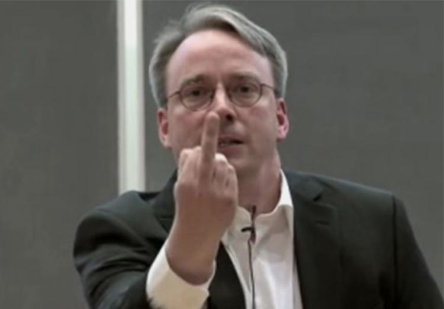

Linus Torvalds
Linus Benedict Torvalds ist ein finnisch-US-amerikanischer Informatiker und Software-Entwickler. Torvalds ist der Initiator
sowie die treibende Kraft bei der Entwicklung des Linux-Kernels, dessen Entwicklung er bis heute koordiniert. Außerdem ist er
der Erfinder des Versionsverwaltungssystems Git und der Tauchlogsoftware Subsurface.

Am 17. Februar 1997 zog Torvalds zusammen mit seiner Frau Tove nach Santa Clara, wo er seine Arbeit bei Transmeta anfing – die Entwicklung
eines x86er Interpreters für deren Prozessoren. Das Unternehmen hatte ihm zugesagt, sich auch während der Arbeitszeit mit Linux
beschäftigen zu dürfen, was er auch nutzte. So hatte er unter anderem die Gelegenheit, Steve Jobs und später auch Bill Joy zu treffen,
auch wenn deren Meinungen zu Open Source sich von seinen unterschieden.
Am 16. April 1998 bekamen die Torvalds mit Daniela Yolanda eine zweite Tochter. Auch Linux erhielt mehr Auftrieb, als im gleichen Jahr
zuerst das Softwareunternehmen Netscape Communications den Quellcode des Netscape Communicators unter einer freien Lizenz veröffentlichte
und kurz danach Sun und Adaptec verkündeten, Linux International beizutreten. Schließlich gab auch IBM bekannt, den Open-Source-Webserver
Apache auf seinen Servern zu unterstützen. Immer öfter wurde freie Software in der Presse besprochen, woraufhin sich Torvalds im August
1998 als eines der Aushängeschilder dieser Bewegung auf dem Cover des Forbes Magazine unter dem Titel Peace, love and software wiederfand,
begleitet von einem kurzen Überblick über die Geschichte von Linux und dem Artikel For the love of hacking.
1997 hatte Torvalds von den beiden Linux-Unternehmen Red Hat und VA Linux aus Dank Aktienoptionen erhalten. Als am 11. Oktober 1999
Red Hat erfolgreich an die Börse ging, wuchs das Torvaldssche Vermögen über Nacht von 5.000 Dollar auf eine Million. Wenige Monate später
hatte VA Linux den erfolgreichsten Börsenstart aller Zeiten. Nach Ablauf der beiden 180-tägigen Sperrfristen besaß die Familie
20 Millionen Dollar und zog aus ihrer Doppelhaushälfte in ein großes komfortables Anwesen.